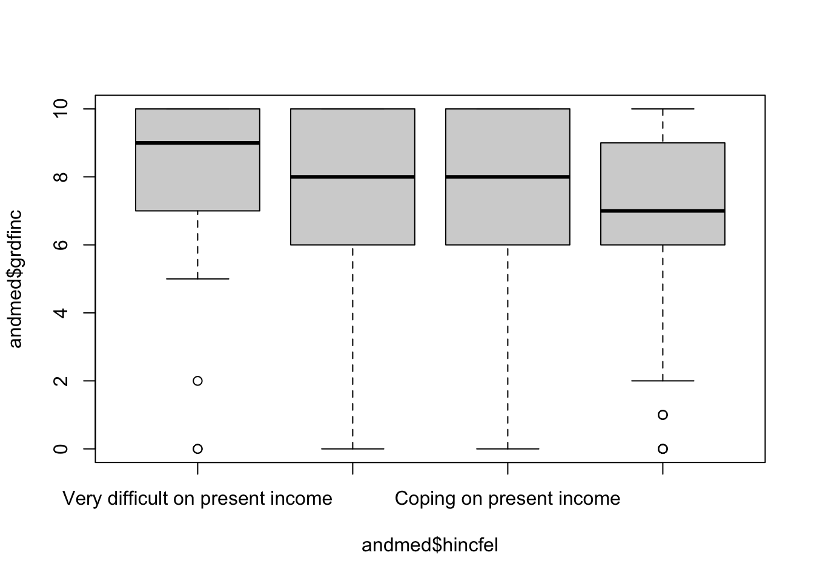
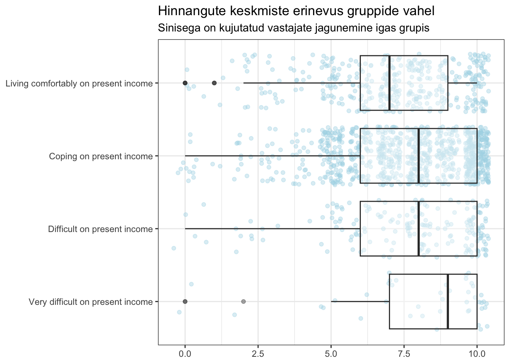

andmed<-read_csv("ess10_valitsus.csv")9 Keskmiste võrdlus
See peatükk annab ülevaate, kuidas võrrelda R-is arvulise tunnuse väärtusi erinevate gruppide vahel ehk kuidas teha t-test-i, Kruskal-Wallise testi, viia läbi diseprsioonianalüüsi. Lisaks näeb, kuidas esitleda tunnuste keskmisi pildis.
Kasutan siin analüüsimeetodite tutvustamiseks Euroopa Sotsiaaluuringu (edaspidi ESS) andmeid, mis on kogutud Eesti inimeste kohta uuringu 10. voorus. Andmed on võimalik alla laadida ESS andmete portaalist. Siin peatükis olen teinud 10. voorust väljavõtte paari tunnuse kohta1.
ESS andmeid on võimalik tarbida ka otse ESS-portaalis, kuid R-i kasutama õppimiseks tasub ESS-portaali konto teha ja sobiv andmestik alla laadida.
9.1 Eeltööd
Iga analüüs algab tunnustega tutvumisega. Vajadusel vaata peatükke:
- Andmestikust esmase ülevaate saamine
- Tehniline töö tunnustega
summary(andmed) essround idno gndr hincfel
Min. :10 Min. :10021 Length:1542 Length:1542
1st Qu.:10 1st Qu.:14462 Class :character Class :character
Median :10 Median :19254 Mode :character Mode :character
Mean :10 Mean :19073
3rd Qu.:10 3rd Qu.:23587
Max. :10 Max. :27919
grdfinc gvctzpv cntry
Min. : 0.000 Min. : 0.000 Length:1542
1st Qu.: 6.000 1st Qu.: 7.000 Class :character
Median : 8.000 Median : 9.000 Mode :character
Mean : 7.533 Mean : 8.065
3rd Qu.:10.000 3rd Qu.:10.000
Max. :10.000 Max. :10.000
NA's :9 NA's :13 Andmestikus on tunnused “grdfinc” ja “gvctzpv”, millega on mõõdetud inimeste arvamust demokraatiast. Inimestelt küsiti kuivõrd olulised on erinevad aspektid demokraatia jaoks üldiselt. Hinnangud koguti skaalal kümnepallisel skaalal, kus üks tähendas “ei ole demokraatia jaoks üldiselt üldse oluline” ja kümme tähendas “on demokraatia jaoks üldiselt äärmiselt oluline”.
Kui oluline on Teie arvates demokraatia jaoks üldiselt, et:
- “grdfinc” - valitsus kaitseb kõiki kodanikke vaesuse eest;
- “gvctzpv” - valitsus võtab kasutusele meetmeid sissetulekute erinevuste vähendamiseks
Andmestikus on kategoriaalne tunnus “hincfel”, mis annab aimu nende sissetulekute suuruse kohta. Inimestelt küsiti järgmist:
Milline järgnevatest kirjeldustest vastab Teie arvates kõige paremini Teie leibkonna praegusele sissetulekute tasemele?
- Elan /elame mugavalt praeguse sissetuleku juures
- Saame hakkama praeguse sissetuleku juures
- Praeguse sissetuleku juures on raske hakkama saada
- Praeguse sissetuleku juures on väga raske hakkama saada
Kuigi küsimusi esitati kas eesti või vene keeles, on need kategooriad andmestikus inglise keeles.
Vajadusel loe, kuidas ringi kodeerida faktoreid.
andmed$hincfel<-factor(andmed$hincfel,
levels=c("Very difficult on present income",
"Difficult on present income",
"Coping on present income",
"Living comfortably on present income"),
ordered = T)fct_count(andmed$hincfel)# A tibble: 4 × 2
f n
<ord> <int>
1 Very difficult on present income 43
2 Difficult on present income 193
3 Coping on present income 917
4 Living comfortably on present income 3899.2 T-test
Lugemissoovitus
Rootalu, K. (2014). T-test. K. Rootalu, V. Kalmus, A. Masso, ja T. Vihalemm (toim), Sotsiaalse analüüsi meetodite ja metodoloogia õpibaas. https://samm.ut.ee/t-test/
Soovime teada saada, kuidas erinevad meeste ja naiste hinnangud demokraatia osas. Kas arvamused, et demokraatia jaoks on olulised aspektid, et “valitsus kaitseb kõiki kodanikke vaesuse eest” (tunnust “grdfinc”) ja et “valitsus võtab kasutusele meetmeid sissetulekute erinevuste vähendamiseks” (tunnus “gvctzpv”) on meestel ja naistel ühesugused.
T-test-i eeltööks on vaja vaadata numbrilise tunnuse jaotust, et selgitada välja, kas standardhälve väärtused on kahe grupi puhul sarnased või erinevad. Seda saab teha ka käsuga aggregate(). Tutvume esmalt tunnusega “grdfinc” ning seejärel “gvctzpv”.
aggregate(grdfinc ~ gndr, andmed, sd) gndr grdfinc
1 Mees 2.464564
2 Naine 2.162381aggregate(gvctzpv ~ gndr, andmed, sd) gndr gvctzpv
1 Mees 2.254784
2 Naine 2.087212Ma hindan antud juhul 0.3 suurust vahet sarnaseks ning kasutan t.test() käsu sees var.equal = TRUE.
t.test(andmed$grdfinc~andmed$gndr,
alternative = "two.sided",
1 var.equal = TRUE)- 1
-
Kui standardhälvete erinevus oleks suur, saaks panna
TRUEasemelFALSE.
Two Sample t-test
data: andmed$grdfinc by andmed$gndr
t = -4.53, df = 1531, p-value = 6.356e-06
alternative hypothesis: true difference in means between group Mees and group Naine is not equal to 0
95 percent confidence interval:
-0.7676193 -0.3037218
sample estimates:
mean in group Mees mean in group Naine
7.238026 7.773697 Saame teada, et t-test statistik-u väärtus on -4,53 ning naistega võrreldes on meeste arvates demokraatia jaoks üldiselt veidi vähem oluline, et valitsus kaitseb kõiki kodanikke vaesuse eest (hinnangu keskmine on meestel 7,3 ja naistel 7,8 punkti). Kuigi hinnangute vahe on väike (0,5 punkti), on tegemist statiliselt olulise erinevusega (\(p\)-value on üliväike).
Paariviisiline t-test
t-test ei vaja alati kahte gruppi. Paariviisilist t-testi saab kasutada siis, kui on soov võrrelda nt samade inimeste erinevate tunnuste keskmisi. Kui inimese meelest on demokraatia jaoks oluline, et “valitsus kaitseb kõiki kodanikke vaesuse eest”, siis kas hinnang on sarnane ka selles, et “valitsus võtab kasutusele meetmeid sissetulekute erinevuste vähendamiseks”?
Lisame t.test() käsule täpsustuse, et vaja on teha paariviisiline t-test.
t.test(andmed$grdfinc, andmed$gvctzpv,
1 paired=TRUE,
alternative = "two.sided")- 1
- Täpsustus paariviisilise t-testi läbiviimiseks
Paired t-test
data: andmed$grdfinc and andmed$gvctzpv
t = -10.629, df = 1526, p-value < 2.2e-16
alternative hypothesis: true mean difference is not equal to 0
95 percent confidence interval:
-0.6329981 -0.4357642
sample estimates:
mean difference
-0.5343811 Selgub, et hinnangute keskmiste erinevus on -0,53 punkti (“grdfinc” keskmine on madalam kui “gvctzpv” keskmine).
Keskmiste erinevus tunnuste vahel tuli välja juba tunnustega tutvumise etapis, kui kasutasin käsku summary(). paariviisiline t-test vaatab lisaks erinevuse olulisust.
Testi tulemusel selgus, et tegemist on statistiliselt olulise erinevusega. Ehk siis inimesed hindavad demokraatia jaoks üldiselt olulisemaks, et “valitsus võtab kasutusele meetmeid sissetulekute erinevuste vähendamiseks” kui selle, et “valitsus kaitseb kõiki kodanikke vaesuse eest”.
9.3 Anova, dispersioonianalüüs
Lugemissoovitus
Tooding, L.-M. (2014). Dispersioonianalüüs. K. Rootalu, V. Kalmus, A. Masso, ja T. Vihalemm (toim), Sotsiaalse analüüsi meetodite ja metodoloogia õpibaas. https://samm.ut.ee/dispersioonanalyys/
Mõnikord on võrreldavaid gruppe rohkem kui kaks. Siis on sobilik teha keskmiste võrdluseks dispersioonianalüüs.
Võib-olla hinnangute erinevus ei sõltugi vastaja soost, vaid sellest, kuidas ta ise oma sissetulekuga toime tuleb (tunnus “hincfel”)? Kas on võimalik, et paremal elujärjel olevad inimesed ei pea demokraatia puhul sugugi sama oluliseks, et valitsus tegeleks sissetulekute erinevuste vähendamisega kui inimesed, kellel on oma sissetulekute juures väga keeruline toime tulla?
Testi eeltöö tähendab alati tunnustega tutvumist.
andmed%>%
drop_na(grdfinc, gvctzpv)%>%
group_by(hincfel)%>%
summarise(n=n(),
vaesuse_kaitse=mean(grdfinc),
vasesuse_sd=sd(grdfinc),
meetmed_vahendamiseks=mean(gvctzpv),
meetmed_sd=sd(gvctzpv))# A tibble: 4 × 6
hincfel n vaesuse_kaitse vasesuse_sd meetmed_vahendamiseks meetmed_sd
<ord> <int> <dbl> <dbl> <dbl> <dbl>
1 Very diffic… 43 8.12 2.63 8.47 2.33
2 Difficult o… 192 7.75 2.40 8.48 1.93
3 Coping on p… 906 7.60 2.27 8.17 2.10
4 Living comf… 386 7.19 2.32 7.57 2.34Pane tähele, et gruppide suurused on väga erinevad (43 vs 906).
Ideaalsel juhul kodeeriks grupid ümber enam-vähem sama suureks, kuid praegu R-is töötamise näitamiseks las jääda nii. Lihtsalt pea meeles, et R ei tee sinu tööle kriitikat ja arvutab ikkagi seda, mida tal arvutada lased.
Tehniliselt oleks õigem teha Kurskal-Wallis test.
Inimesed, kellel on oma praeguse sissetuleku juures väga raske hakkama saada (n=43) peavad demokraatia puhul teistest olulisemaks, et valitsus kaitseks kõiki kodanikke vaesuse eest (keskmine=8,12).
oneway.test() käsuga saab teha dispersioonianalüüsi, kus tuleb esmalt öelda sõltuv tunnus (“grdfinc”) ja grupeeriv tunnus (“hincfel”).
oneway.test(andmed$grdfinc~andmed$hincfel)
One-way analysis of means (not assuming equal variances)
data: andmed$grdfinc and andmed$hincfel
F = 4.187, num df = 3.00, denom df = 175.34, p-value = 0.006836Saame teada , et sisstulekute hinnangute jaotuse järgi ei ole seisukoht vaesuse kaitse osas ühesugune ( \(F\) =4,2 ja \(p\)<0,01). Kahjuks gruppide erinevust selle käsuga ei näe. Võimalus oleks kombineerida käske aov() ja seejärel teha post-hoc testi.
aov(grdfinc~hincfel, andmed)%>%
summary() Df Sum Sq Mean Sq F value Pr(>F)
hincfel 3 72 23.980 4.495 0.0038 **
Residuals 1529 8158 5.335
---
Signif. codes: 0 '***' 0.001 '**' 0.01 '*' 0.05 '.' 0.1 ' ' 1
9 observations deleted due to missingnessPost-hoc testi saab teha siin käsuga TukeyHSD()
TukeyHSD() esitab analüüsitulemused neljas grupis:
- “diff” - gruppide keskmine erinevus
- “lwr” - usalduspiiri alumine väärtus
- “upr” - usalduspiiri ülemine väärtus
- “p adj” - olulisuse tõenäosus
Tulemuste lugemist tasub alustada viimasest rühmast, kus on näha, etstatitstiline oluline` erinevus on gruppide “Living comfortably on present income” ja “Coping on present income” ning “Living comfortably on present income” ja “Difficult on present income” vahel.
TukeyHSD(aov(grdfinc~hincfel, andmed)) Tukey multiple comparisons of means
95% family-wise confidence level
Fit: aov(formula = grdfinc ~ hincfel, data = andmed)
$hincfel
diff
Difficult on present income-Very difficult on present income -0.3662791
Coping on present income-Very difficult on present income -0.5136446
Living comfortably on present income-Very difficult on present income -0.9198966
Coping on present income-Difficult on present income -0.1473655
Living comfortably on present income-Difficult on present income -0.5536176
Living comfortably on present income-Coping on present income -0.4062520
lwr
Difficult on present income-Very difficult on present income -1.3685265
Coping on present income-Very difficult on present income -1.4407020
Living comfortably on present income-Very difficult on present income -1.8748241
Coping on present income-Difficult on present income -0.6191067
Living comfortably on present income-Difficult on present income -1.0780132
Living comfortably on present income-Coping on present income -0.7667049
upr
Difficult on present income-Very difficult on present income 0.63596832
Coping on present income-Very difficult on present income 0.41341278
Living comfortably on present income-Very difficult on present income 0.03503078
Coping on present income-Difficult on present income 0.32437566
Living comfortably on present income-Difficult on present income -0.02922198
Living comfortably on present income-Coping on present income -0.04579914
p adj
Difficult on present income-Very difficult on present income 0.7833365
Coping on present income-Very difficult on present income 0.4838591
Living comfortably on present income-Very difficult on present income 0.0638553
Coping on present income-Difficult on present income 0.8528467
Living comfortably on present income-Difficult on present income 0.0338346
Living comfortably on present income-Coping on present income 0.01985839.4 Kruskal-Wallis test
Kruskal-Wallis test võrdleb keskmiste astak-uid ning sobib kasutada olukordades, kus võrreldavad grupid ei ole ühesuurused. Käsk kruskal.test() toimib põhimõttel, et vajab esmalt sõltuvat ja seejärel grupeerivat tunnust. Andmestiku nimi tuleb öelda koma järel.
kruskal.test(grdfinc~hincfel, andmed)
Kruskal-Wallis rank sum test
data: grdfinc by hincfel
Kruskal-Wallis chi-squared = 19.13, df = 3, p-value = 0.0002569Kruskal-Wallise test näitab, et gruppide vahel on statistiliselt olulised erinevused. Hii-ruut statistik on 19.1 ja \(p\)<0,01.
Kruskal-Wallis test paketiga PMCMRplus
Paketiga MPCMPRplus (Pohlert 2023) saab teha Kruskal-Wallis testi (käsk kruskalTest().
library(PMCMRplus)Test ei õnnestu kui grupeeriv tunnus ei ole faktor. Vaata ka, kuidas tunnuseid ringi kodeerida.
class(andmed$hincfel)[1] "ordered" "factor" kruskalTest(grdfinc~hincfel, andmed)Warning in kruskalTest.default(c(10, 3, 8, 8, 8, 10, 10, 10, 7, 8, 0, 5, : Ties
are present. Quantiles were corrected for ties.
Kruskal-Wallis test
data: grdfinc by hincfel
chi-squared = 19.13, df = 3, p-value = 0.00025699.5 Keskmiste võrdluse esitlemine pildis
Andmete visualiseerimise kohta tuleb eraldi peatükk.
Keskmiste võrdluse esitlemiseks sobib joonisena karp-diagramm, sest tegemist on sisuliselt ju numbrilise tunnuse esitlemisega.
Baaskäsk boxplot() ajaks justkui asja ära, kuid antud hetkel ei mahuta kõikide gruppide nimesid joonisele.
boxplot(andmed$grdfinc~andmed$hincfel)
Karpdiagrammi miinuseks on see, et gruppide suurusest jääb ekslik mulje nagu need oleks võrdsed.
Üks võimalus oleks esitleda keskmiste erinevust gruppide vahel nii, et lisada sinna ka vastajaid kujutavad täpikesi. Pilt nüüd kauniks kunstiväärtuseks ei läinud, kuid annab vaatluse all oleva situatsiooni kohta veidi paremini infot edasi.
andmed%>%
ggplot(aes(x=hincfel, y=grdfinc))+
geom_jitter(alpha=0.4, color="lightblue")+
geom_boxplot(alpha=0.4)+
ggtitle("Hinnangute keskmiste erinevus gruppide vahel","Sinisega on kujutatud vastajate jagunemine igas grupis")+
coord_flip()+
ylab(NULL)+
xlab(NULL)+
theme_bw()